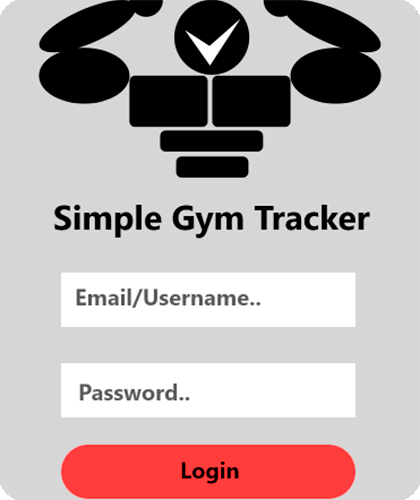
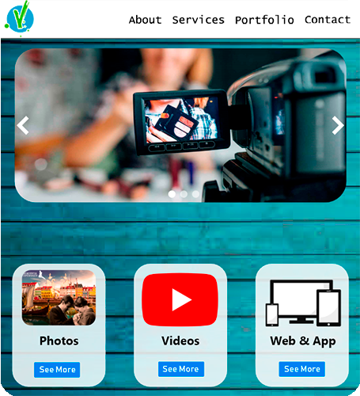
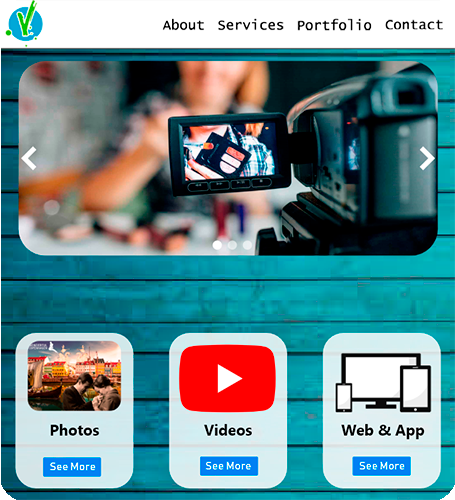

Jeg fik fin feedback for dette projekt ved den mundtlige fremlæggelse. Jeg har ved eksamensudgaven ændret informationsarkitekturen og forsøgt at have et mere professionelt udtryk, men som dog stadig har et personligt islæt.
"Ok portfolio med forventet indhold. Der sker visuelt lidt for meget forskelligt på siderne, kan du forenkle det lidt? Vær opmærksom på ikke at have så lange tekstlinier (antal tegn): aboutsiden"
Konsekvens af kritik
Jeg har efterfølgende i min fritid arbejdet på sitet, som jeg så igen har ændret her i løbet af eksamensperioden.
Jeg har ved den nuværende udgave af vilifa.com kommet lærerens kritikpunkter i møde og søgt at forenkle det visuelle udtryk og rettet teksten i ”about”(”om”), så den virker mere indbydende og læsbar.
Vi skulle her desinge en prototype til en app vha. Adobe XD.Vi fik 3 valgmuligheder og jeg valgte en sportstracker-app.

Kort fortalt, så var formålet ved app'en primært at give et detaljeret overblik over brugerens styrketrænings-pas samt progression inden for de enkelte øvelser. Et vigigt element ved denne opgave var, at teste informationsarkitektur og modtagernes behov for en sådan app.
Til opgaven benyttede jeg "Kortsorteringstest", "Tænke-højt-test" og en brugerundersøgelse via "Google Form".
"Meget flot opgave med alle de rigtige ting inkluderet (mangler lige tablet XD link). Du har en god dokumentation som viser fremskridt og proces for hvad du har lavet og et rigtigt godt layout. Overvej om du skulle lave layoutet i skærmformat i stedet, da der ikke er nogen som printer dem ud længere, men den er meget let at læse og overskueligt sat op. Alt dokumentation er lige i skabet og er veludført og det er præcis sådan en opgave skal tilgås. Det er flot at se dine tests og alle resultaterne du er nået til. Særdeles godt at du får lavet flere tests og vedlagt resume af dem. FlowChart er også godt lavet og viser lige de progressioner du vil have brugeren igennem."
Konsekvens af kritik
Ved skole-opgaver o.a. der skal afleveres i PDF, vil jeg vælge at displaye dem i skærmformat.
Gruppeopgaven gik ud på, at vi skulle designe en hjemmeside til det fiktive webberau "Sweetbot" samt designe logo og ikoner til deres nye e-commerce-løsning.
Vi fik generelt en god tilbagemelding ved den mundtlige fremlæggeles. Lærene hæftede sig dog ved, at det var lidt af et selvmål, at vælge et politisk ukorrekt billede, som banner, nu hvor "Sweetbot" bl.a. skulle forestille, at være en branding virksomhed. Derudover havde vi glemt at importere den påkrævede font-type til vores hjemmeside.
Konsekvens af kritk
Det nye banner viser et mere afslappet og moderne kontormiljø, og her er ingen belærende mænd og underdanige kvinder. At den sorte kvinde står i baggrunden, er en politisk ukorrekt bagatel i min optik, som kan misforstås, men kun hvis man har den hensigt på sin agenda.
Derudover har jeg i navigationsbaren rettet den understreg, der fejlagtigt indikerede, at man var på ”Om os”-siden, når man var på ”Projekter”-siden, alignet pakke-priserne og importeret ”Lato” skrifttypen i head/index.html. Den redigerede udgave af Flow 4 projektet.
 
